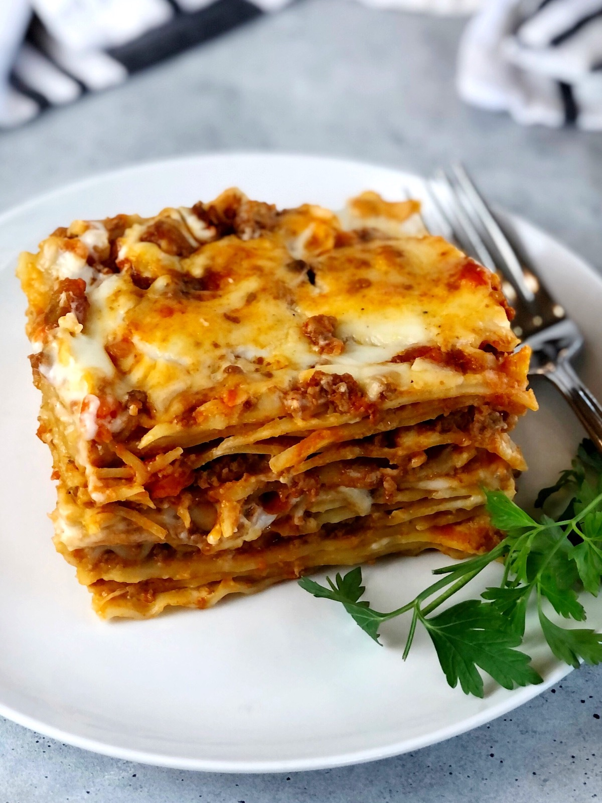

Lasagne

Description
A lasagne is a classic Italian dish composed of layers of pasta, bechamel sauce and meat or tomato sauce. This classic recipe can be altered in many ways - such as this vegetarian version - to create a delicious dinner for all your friends and family!
Ingredients
For the tomato sauce:
- 1 onion
- 2 garlic cloves
- 2 red peppers
- 400g chopped tomatoes
- 2 tsp dried mixed herbs
- 75ml red wine
For the bechamel sauce:
- 50g butter
- 70g plain flour
- 80ml milk
- 150g cheddar (grated)
For the lasagne:
- Packet of lasagne sheets
- 200g cherry tomatoes (halved)
- Handful of basil leaves
Steps
- Finely chop onion and garlic cloves. Fry with oil for 7-8 minutes until soft.
- Chop peppers and add to the oil. Fry for another 5-6 minutes until browned.
- Add chopped tomatoes to the pan alongside the red wine and mixed herbs. Bring to a simmer.
- In a separate pan, melt the butter. Once melted, add the plain flour and stir to combine. Add milk slowly while stirring and heat gently until combined.
- Once bechamel sauce has thickened, add cheddar.
- Pour layer of tomato sauce into lasagne dish. Layer one sheet of pasta on top. Pour layer of bechamel sauce on top, then another layer on pasta. Continue until all sauces have been poured into the dish.
- Decorate the final layer - which should be bechamel sauce - with chopped cherry tomatoes and shredded basil leaves.